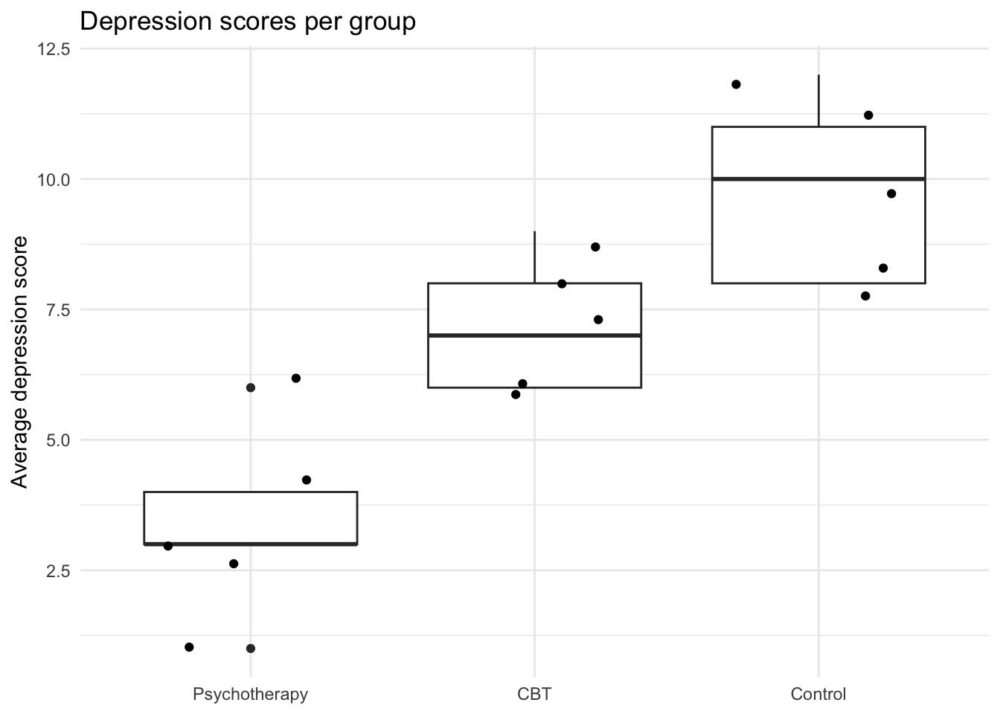

library(tidyverse)
library(papaja) #for formatting p values
library(emmeans) #for post-hoc t-tests
library(knitr) #for formatting tablesModule 5: Lab Instructions (Instructor File)
Purpose
In today’s lab, we will focus on linear regression with a categorical predictor. We will pay special attention to how categorical variables are coded and what that means for our interpretations.
For today’s lab, you will need to load the following libraries.
Research scenario
We’ll be looking at a dataset comparing different kinds of treatment for depression. In this study, depressed patients (n = 5 per group) were randomly assigned to one of three groups:
- CBT group
- Psychotherapy group
- Control group (received no therapy)
After 10 weeks, participants’ depression scores were measured (on a scale of 1 = no depression to 12 = severely depressed). Our dataset will have just 2 variables: group (CBT, Psychotherapy, or Control) and depress (depression scores).
NOTE: 1 = CBT; 2 = Psychotherapy; 3 = Control
Read in the data
First, let’s read in the data and then use View() to check it out.
Today’s dataset is called depression_therapy.csv. Let’s read it in and name it cat_data (i.e., categorical regression data).
The data has 4 columns:
- group: a numeric indicator of whether they were in the CBT, Psychotherapy, or Control group
- depress: participants’ score on the depression measure
Structure of the data
The first thing we should check is how the data are structured. We should have a factor called group and a numeric variable for depression scores called depress. Let’s use the function str().
str(cat_data)spc_tbl_ [15 × 2] (S3: spec_tbl_df/tbl_df/tbl/data.frame)
$ group : num [1:15] 1 1 1 1 1 2 2 2 2 2 ...
$ depress: num [1:15] 9 6 7 6 8 6 3 4 3 1 ...
- attr(*, "spec")=
.. cols(
.. group = col_double(),
.. depress = col_double()
.. )
- attr(*, "problems")=<externalptr> Recode group as a factor
R thinks that group is an integer, so we need to make it into a factor in order to run our analysis. We can use mutate() and base R’s factor(), which can be used to turn variables into factors.
NOTE: You want to provide labels in the same order as the levels of the factor, so in this case we want them in the order CBT, Psychotherapy, and Control (see above).
cat_data = cat_data %>%
mutate(group = factor(group,
labels = c("CBT", "Psychotherapy", "Control"))) # order matters here! Look at the structure of the data again. Now it’s clear that group is a factor variable with the correct levels.
str(cat_data)tibble [15 × 2] (S3: tbl_df/tbl/data.frame)
$ group : Factor w/ 3 levels "CBT","Psychotherapy",..: 1 1 1 1 1 2 2 2 2 2 ...
$ depress: num [1:15] 9 6 7 6 8 6 3 4 3 1 ...Descriptives
Next, we’ll get descriptives for each group using two tidyverse functions, group_by() and summarize(). First, you want to group by group, and then you want to summarize with three arguments, mean, sd, and n. We’ll use knitr to make this into a table.
cat_data %>%
group_by(group) %>%
summarize(mean = mean(depress, na.rm = TRUE),
sd = sd(depress, na.rm = TRUE),
n = n()) %>%
knitr::kable(digits = 2)| group | mean | sd | n |
|---|---|---|---|
| CBT | 7.2 | 1.30 | 5 |
| Psychotherapy | 3.4 | 1.82 | 5 |
| Control | 9.8 | 1.79 | 5 |
Visualizing the data
There are many ways that you can visualize the data. In ggplot, I recommend adding a geom_boxplot() or geom_violin() layer. You can also use geom_bar() but there are some disadvantages to barplots, and there have even been attempts to Bar Bar Plots! from scientific journals.
This is a good resource for boxplots with ggplot, this is a good resource for violin plots with ggplot, and this is a good resource for bar plots with ggplot.
#boxplot:
cat_data %>%
ggplot(aes(x = fct_reorder(group, depress), y = depress)) +
geom_boxplot() +
geom_jitter() +
theme_minimal() +
labs(x = NULL,
y = "Average depression score",
fill = "Group",
title = "Depression scores per group")
#violin plot:
cat_data %>%
ggplot(aes(x = fct_reorder(group, depress), y = depress)) +
geom_violin(aes(fill = group)) +
geom_jitter() +
theme_minimal() +
labs(x = NULL,
y = "Average depression score",
fill = "Group",
title = "Depression scores per group")+
theme(legend.position = "none") #barplot:
cat_data %>%
group_by(group) %>%
summarise(avg_depress = mean(depress),
sd = sd(depress)) %>%
ggplot(aes(x = fct_reorder(group, avg_depress),
y = avg_depress)) +
geom_bar(stat = "identity", fill = "cornflowerblue") +
geom_point(data = cat_data,
aes(x = group, y = depress),
position = 'jitter')+
theme_minimal()+
labs(y = "Average depression score",
x = NULL,
title = "Average depression score per group") +
geom_errorbar(aes(ymin=avg_depress - sd, ymax=avg_depress + sd),
width = .1)INST NOTE: Why might we prefer the boxplot or violin plot to the barplot? Watch the Bar Bar Plots video!
Let’s start by just looking at variables with two levels.
Create a new dataset called cat_reduced that includes only the treatment and control groups. Use View() to double check that the data look correct.
cat_reduced <- cat_data %>%
filter(group != "Control") %>%
droplevels()
View(cat_reduced)Regression with categorical predictors
Dummy coding
Dummy coding is R’s default method. This actually happens under the hood in R when our independent variable is a factor. Let’s run a regression predicting depress from group.
model_default <- lm(depress ~ group, data = cat_reduced)
summary(model_default)
Call:
lm(formula = depress ~ group, data = cat_reduced)
Residuals:
Min 1Q Median 3Q Max
-2.40 -1.00 -0.30 0.75 2.60
Coefficients:
Estimate Std. Error t value Pr(>|t|)
(Intercept) 7.2000 0.7071 10.18 7.42e-06 ***
groupPsychotherapy -3.8000 1.0000 -3.80 0.00524 **
---
Signif. codes: 0 '***' 0.001 '**' 0.01 '*' 0.05 '.' 0.1 ' ' 1
Residual standard error: 1.581 on 8 degrees of freedom
Multiple R-squared: 0.6435, Adjusted R-squared: 0.5989
F-statistic: 14.44 on 1 and 8 DF, p-value: 0.005237Question: What does the F test tell us?
INST ANS: Whether any mean is different from any other mean. So we already know there’s a difference between the two groups.
Here is our regression equation:
\[Depression_i = \beta_0 + \beta_1psychotherapy_i + \beta_2control_i + e_i\]
R is creating a dummy variable for us under the hood: groupPsychotherapy. This is what R is doing:
cat_reduced %>%
mutate(groupPsychotherapy = case_when(group == "Psychotherapy" ~ 1,
TRUE ~ 0))# A tibble: 10 × 3
group depress groupPsychotherapy
<fct> <dbl> <dbl>
1 CBT 9 0
2 CBT 6 0
3 CBT 7 0
4 CBT 6 0
5 CBT 8 0
6 Psychotherapy 6 1
7 Psychotherapy 3 1
8 Psychotherapy 4 1
9 Psychotherapy 3 1
10 Psychotherapy 1 1By default, R treats whatever the first level of the factor variable is as the reference group. In this case, CBT was the first level of group (because it was initially coded as 1 in our raw data), so the model treated CBT as our reference group.
Here is our regression equation, derived from the output:
\[Depression_i = 7.20 -3.80psychotherapy\]
Question: Using this equation, determine the mean depression score of each group.
INST ANS: 7.2: CBT 7.2 - 3.8 = 3.4: psychotherapy
Now, let’s revisit the output.
model_default <- lm(depress ~ group, data = cat_reduced)
summary(model_default)
Call:
lm(formula = depress ~ group, data = cat_reduced)
Residuals:
Min 1Q Median 3Q Max
-2.40 -1.00 -0.30 0.75 2.60
Coefficients:
Estimate Std. Error t value Pr(>|t|)
(Intercept) 7.2000 0.7071 10.18 7.42e-06 ***
groupPsychotherapy -3.8000 1.0000 -3.80 0.00524 **
---
Signif. codes: 0 '***' 0.001 '**' 0.01 '*' 0.05 '.' 0.1 ' ' 1
Residual standard error: 1.581 on 8 degrees of freedom
Multiple R-squared: 0.6435, Adjusted R-squared: 0.5989
F-statistic: 14.44 on 1 and 8 DF, p-value: 0.005237Question: Interpret the intercept. What does a significant p-value signify?
INST ANS: mean of CBT is significantly different from 0.
Question: Interpret the slopes. What do the significant p-values signify?
INST ANS: The mean of psychotherapy is significantly different from the mean of CBT.
Now, let’s change the reference level so that Psychotherapy is assigned a 0 and CBT is assigned a 1.
cat_reduced <- cat_reduced %>%
mutate(groupCBT = case_when(group == "CBT" ~ 1,
TRUE ~ 0))
cat_reduced# A tibble: 10 × 3
group depress groupCBT
<fct> <dbl> <dbl>
1 CBT 9 1
2 CBT 6 1
3 CBT 7 1
4 CBT 6 1
5 CBT 8 1
6 Psychotherapy 6 0
7 Psychotherapy 3 0
8 Psychotherapy 4 0
9 Psychotherapy 3 0
10 Psychotherapy 1 0Rerun the model. Compare it to the default model.
model_newref <- lm(depress ~ groupCBT, data = cat_reduced)
summary(model_newref)
Call:
lm(formula = depress ~ groupCBT, data = cat_reduced)
Residuals:
Min 1Q Median 3Q Max
-2.40 -1.00 -0.30 0.75 2.60
Coefficients:
Estimate Std. Error t value Pr(>|t|)
(Intercept) 3.4000 0.7071 4.808 0.00134 **
groupCBT 3.8000 1.0000 3.800 0.00524 **
---
Signif. codes: 0 '***' 0.001 '**' 0.01 '*' 0.05 '.' 0.1 ' ' 1
Residual standard error: 1.581 on 8 degrees of freedom
Multiple R-squared: 0.6435, Adjusted R-squared: 0.5989
F-statistic: 14.44 on 1 and 8 DF, p-value: 0.005237Question: Interpret the intercept. What does a significant p-value signify?
INST ANS: mean of Psychotherapy is significantly different from 0.
Question: Interpret the slopes. What do the significant p-values signify?
INST ANS: The mean of CBT is significantly different from the mean of Psychotherapy. Same meaning, now just different direction.
Deviation coding
Now, let’s say we’re not interested in the difference between CBT and Psychotherapy. Instead, we want to know whether either differs from the grand mean of depression. To do this, we would use Deviation Coding. There are a few ways we can create our codes, but this is my preferred method:
Create dummy variables with mutate() and case_when()
# create new dummy variables containing 1's and 0's
cat_reduced <- cat_reduced %>%
mutate(dev_code = case_when(group == "CBT" ~ .5,
TRUE ~ -.5))
#check out your data
cat_reduced# A tibble: 10 × 4
group depress groupCBT dev_code
<fct> <dbl> <dbl> <dbl>
1 CBT 9 1 0.5
2 CBT 6 1 0.5
3 CBT 7 1 0.5
4 CBT 6 1 0.5
5 CBT 8 1 0.5
6 Psychotherapy 6 0 -0.5
7 Psychotherapy 3 0 -0.5
8 Psychotherapy 4 0 -0.5
9 Psychotherapy 3 0 -0.5
10 Psychotherapy 1 0 -0.5Now, we can run the linear model using this new dummy variable as the IV.
model_dummy1 <- lm(depress ~ dev_code, data = cat_reduced)
summary(model_dummy1)
Call:
lm(formula = depress ~ dev_code, data = cat_reduced)
Residuals:
Min 1Q Median 3Q Max
-2.40 -1.00 -0.30 0.75 2.60
Coefficients:
Estimate Std. Error t value Pr(>|t|)
(Intercept) 5.3 0.5 10.6 5.48e-06 ***
dev_code 3.8 1.0 3.8 0.00524 **
---
Signif. codes: 0 '***' 0.001 '**' 0.01 '*' 0.05 '.' 0.1 ' ' 1
Residual standard error: 1.581 on 8 degrees of freedom
Multiple R-squared: 0.6435, Adjusted R-squared: 0.5989
F-statistic: 14.44 on 1 and 8 DF, p-value: 0.005237Question: What does the intercept mean? What does the slope mean?
INST ANS: intercept: the grand mean of depression. slope: the difference between the groups. Note that it didn’t change the test from our earlier model, it changed the estimate and the intercept.
Now, let’s take a look at variables with more than 2 levels.
For this, we’ll go back to using cat_data as our data file.
Traditional ANOVA
We will first review how to generate a “traditional ANOVA” table.
To get an ANOVA table, you can use the same lm() as regression, and use anova() to get the ANOVA summary table. Importantly, you want to make sure that the categorical IV is a factor (which we did above).
model_anova <- lm(depress ~ group, data = cat_data)
anova(model_anova)Analysis of Variance Table
Response: depress
Df Sum Sq Mean Sq F value Pr(>F)
group 2 103.6 51.800 18.951 0.0001934 ***
Residuals 12 32.8 2.733
---
Signif. codes: 0 '***' 0.001 '**' 0.01 '*' 0.05 '.' 0.1 ' ' 1To calculate post-hod pairwise comparisons between group levels, we can use emmeans::emmeans(). This function takes an lm() output, an equation that indicates we want to perform pairwise t-tests (pairwise) on the left, and the IV (group) on the right, as well as an adjust (e.g. “bonferroni” or “holm”).
emmeans(model_anova, pairwise ~ group, adjust = "none")$emmeans
group emmean SE df lower.CL upper.CL
CBT 7.2 0.739 12 5.59 8.81
Psychotherapy 3.4 0.739 12 1.79 5.01
Control 9.8 0.739 12 8.19 11.41
Confidence level used: 0.95
$contrasts
contrast estimate SE df t.ratio p.value
CBT - Psychotherapy 3.8 1.05 12 3.634 0.0034
CBT - Control -2.6 1.05 12 -2.487 0.0286
Psychotherapy - Control -6.4 1.05 12 -6.121 0.0001Since we are running a lot of tests (and number of tests grow as we add more levels), we need to correct for multiple comparisons so that we don’t have an inflated type I error rate.
- Bonferroni correction: multiplies the p-values by the number of comparisons. We’ll talk about this more in class on Tuesday!
emmeans(model_anova, pairwise ~ group, adjust = "bonferroni")$emmeans
group emmean SE df lower.CL upper.CL
CBT 7.2 0.739 12 5.59 8.81
Psychotherapy 3.4 0.739 12 1.79 5.01
Control 9.8 0.739 12 8.19 11.41
Confidence level used: 0.95
$contrasts
contrast estimate SE df t.ratio p.value
CBT - Psychotherapy 3.8 1.05 12 3.634 0.0103
CBT - Control -2.6 1.05 12 -2.487 0.0858
Psychotherapy - Control -6.4 1.05 12 -6.121 0.0002
P value adjustment: bonferroni method for 3 tests Question: Compare the p-values from these two emmeans summaries. What do you notice?
INST ANS: p-values are lower (some no longer significant) with Bonferroni correction!
INST NOTE: multiply p-value by # comparisons (3) to illustrate
Regression with categorical predictors
Running the ANOVA within a linear regression framework will give us the same information we already got from our regression model, and something more!
Dummy coding
In regression, categorical predictors with more than two levels are broken up into more than one predictor. This actually happens under the hood in R when our independent variable is a factor. Let’s put group as the predictor in our model as before:
model_default <- lm(depress ~ group, data = cat_data)
summary(model_default)
Call:
lm(formula = depress ~ group, data = cat_data)
Residuals:
Min 1Q Median 3Q Max
-2.4 -1.2 -0.2 1.0 2.6
Coefficients:
Estimate Std. Error t value Pr(>|t|)
(Intercept) 7.2000 0.7394 9.738 4.77e-07 ***
groupPsychotherapy -3.8000 1.0456 -3.634 0.00342 **
groupControl 2.6000 1.0456 2.487 0.02861 *
---
Signif. codes: 0 '***' 0.001 '**' 0.01 '*' 0.05 '.' 0.1 ' ' 1
Residual standard error: 1.653 on 12 degrees of freedom
Multiple R-squared: 0.7595, Adjusted R-squared: 0.7195
F-statistic: 18.95 on 2 and 12 DF, p-value: 0.0001934Question: What does the F test tell us?
INST ANS: Whether any mean is different from any other mean.
Here is our regression equation:
\[Depression_i = \beta_0 + \beta_1psychotherapy_i + \beta_2control_i + e_i\]
R is creating two dummy variables for us under the hood: groupPsychotherapy and groupControl. This is what R is doing:
cat_data %>%
mutate(groupPsychotherapy = case_when(group == "Psychotherapy" ~ 1,
TRUE ~ 0),
groupControl = case_when(group == "Control" ~ 1,
TRUE ~ 0)) # A tibble: 15 × 4
group depress groupPsychotherapy groupControl
<fct> <dbl> <dbl> <dbl>
1 CBT 9 0 0
2 CBT 6 0 0
3 CBT 7 0 0
4 CBT 6 0 0
5 CBT 8 0 0
6 Psychotherapy 6 1 0
7 Psychotherapy 3 1 0
8 Psychotherapy 4 1 0
9 Psychotherapy 3 1 0
10 Psychotherapy 1 1 0
11 Control 12 0 1
12 Control 11 0 1
13 Control 8 0 1
14 Control 10 0 1
15 Control 8 0 1By default, R treats whatever the first level of the factor variable is as the reference group. In this case, CBT was the first level of group (because it was initially coded as 1 in our raw data), so the model treated CBT as our reference group.
Here is our regression equation, derived from the output:
\[Depression_i = 7.20 -3.80psychotherapy + 2.60control\]
Question: Using this equation, determine the mean depression score of each group.
INST ANS: 7.2: CBT 7.2 - 3.8 = 3.4: psychotherapy 7.2 + 2.6 = 9.8: control
Now, let’s revisit the output.
model_default <- lm(depress ~ group, data = cat_data)
summary(model_default)
Call:
lm(formula = depress ~ group, data = cat_data)
Residuals:
Min 1Q Median 3Q Max
-2.4 -1.2 -0.2 1.0 2.6
Coefficients:
Estimate Std. Error t value Pr(>|t|)
(Intercept) 7.2000 0.7394 9.738 4.77e-07 ***
groupPsychotherapy -3.8000 1.0456 -3.634 0.00342 **
groupControl 2.6000 1.0456 2.487 0.02861 *
---
Signif. codes: 0 '***' 0.001 '**' 0.01 '*' 0.05 '.' 0.1 ' ' 1
Residual standard error: 1.653 on 12 degrees of freedom
Multiple R-squared: 0.7595, Adjusted R-squared: 0.7195
F-statistic: 18.95 on 2 and 12 DF, p-value: 0.0001934Question: Interpret the intercept. What does a significant p-value signify?
INST ANS: mean of CBT is significantly different from 0 (because it’s the control group).
Question: Interpret the slopes. What do the significant p-values signify?
INST ANS: The differences between psychotherapy and control are significantly different from the mean of CBT.
Let’s imagine that we have the following (more intuitive) research questions:
- Is CBT effective (relative to no therapy)?
- Is psychotherapy effective (relative to no therapy)?
Question: What do want our reference group to be to answer these research questions?
INST ANS: the control group
Now let’s make the appropriate dummy codes. Recall that we need k-1 dummy codes (where k is the number of groups). We have 3 groups, so we need 2 dummy codes.
Remember, our decision of how to set the dummy codes (which group to set as the reference group) should be guided by our research questions.
Create dummy variables with mutate() and case_when()
# create new dummy variables containing 1's and 0's
cat_data <- cat_data %>%
mutate(CBT.v.Control = case_when(group == "CBT" ~ 1,
TRUE ~ 0),
Psychotherapy.v.Control = case_when(group == "Psychotherapy" ~ 1,
TRUE ~ 0))
#check out your data
cat_data# A tibble: 15 × 4
group depress CBT.v.Control Psychotherapy.v.Control
<fct> <dbl> <dbl> <dbl>
1 CBT 9 1 0
2 CBT 6 1 0
3 CBT 7 1 0
4 CBT 6 1 0
5 CBT 8 1 0
6 Psychotherapy 6 0 1
7 Psychotherapy 3 0 1
8 Psychotherapy 4 0 1
9 Psychotherapy 3 0 1
10 Psychotherapy 1 0 1
11 Control 12 0 0
12 Control 11 0 0
13 Control 8 0 0
14 Control 10 0 0
15 Control 8 0 0Now, we can run the linear model using these new dummy variables as the IV’s.
model_dummy1 <- lm(depress ~ CBT.v.Control + Psychotherapy.v.Control, data = cat_data)
summary(model_dummy1)
Call:
lm(formula = depress ~ CBT.v.Control + Psychotherapy.v.Control,
data = cat_data)
Residuals:
Min 1Q Median 3Q Max
-2.4 -1.2 -0.2 1.0 2.6
Coefficients:
Estimate Std. Error t value Pr(>|t|)
(Intercept) 9.8000 0.7394 13.255 1.59e-08 ***
CBT.v.Control -2.6000 1.0456 -2.487 0.0286 *
Psychotherapy.v.Control -6.4000 1.0456 -6.121 5.17e-05 ***
---
Signif. codes: 0 '***' 0.001 '**' 0.01 '*' 0.05 '.' 0.1 ' ' 1
Residual standard error: 1.653 on 12 degrees of freedom
Multiple R-squared: 0.7595, Adjusted R-squared: 0.7195
F-statistic: 18.95 on 2 and 12 DF, p-value: 0.0001934Question: What does the intercept mean? What do the slopes mean?
INST ANS: mean of the control group; slopes are the differences from the control group.
Another reasonable question might be whether the treatments, on avearge) are better than the control.
Rules for DIY / Planned Contrasts:
Rule 1: Groups coded with positive weights will be compared to groups with negative weights Rule 2: The sum of weights you use should be zero Rule 3: If a group is not involved in a comparison, assign it a weight of 0 Rule 4: Initial weight assigned to groups should be equal to # groups in opposite chunk of variation Rule 5: To get final weights, divide initial weight by number of groups with non-zero weights
| Step | CBT and Psychotherapy | Control |
|---|---|---|
| Positive vs. Negative | Positive | Negative |
| Initial Weights | 1, 1 | -2 |
| Final Weights | 1/3, 1/3 | -2/3 |
Here’s an alternative way to create contrasts, using a matrix.
#first, check out the order of levels of your variable
levels(cat_data$group)[1] "CBT" "Psychotherapy" "Control" #now, list your final weights, in the same order of your levels
Treat.v.Control = c(1/3, 1/3, -2/3)
#turn this into a matrix
mat <- cbind(Treat.v.Control)
#assign these contrasts to your variable
contrasts(cat_data$group) <- mat
#check out the `attributes()` of your variable
attributes(cat_data$group)$levels
[1] "CBT" "Psychotherapy" "Control"
$class
[1] "factor"
$contrasts
Treat.v.Control
CBT 0.3333333 -7.071068e-01
Psychotherapy 0.3333333 7.071068e-01
Control -0.6666667 1.110223e-16#run your model
model_tvc <- lm(depress ~ group, data = cat_data)
summary(model_tvc)
Call:
lm(formula = depress ~ group, data = cat_data)
Residuals:
Min 1Q Median 3Q Max
-2.4 -1.2 -0.2 1.0 2.6
Coefficients:
Estimate Std. Error t value Pr(>|t|)
(Intercept) 6.8000 0.4269 15.930 1.95e-09 ***
groupTreat.v.Control -4.5000 0.9055 -4.969 0.000326 ***
group -2.6870 0.7394 -3.634 0.003424 **
---
Signif. codes: 0 '***' 0.001 '**' 0.01 '*' 0.05 '.' 0.1 ' ' 1
Residual standard error: 1.653 on 12 degrees of freedom
Multiple R-squared: 0.7595, Adjusted R-squared: 0.7195
F-statistic: 18.95 on 2 and 12 DF, p-value: 0.0001934Question: What does the intercept mean? What do the slopes mean?
INST ANS: Intercept is the grand mean. Slope for Treat.v.Control is difference between the mean for Control and the mean across the two treatment groups.
We can have k-1 contrasts. So, we might want to add another contrast testing the two treatment groups. We can do the same thing to add another contrast.
#first, check out the order of levels of your variable
levels(cat_data$group)[1] "CBT" "Psychotherapy" "Control" #now, list your final weights, in the same order of your levels. control drops out, so we assing it a zero.
CBT.v.Psychotherapy = c(1/2, -1/2, 0)
#turn this into a matrix along with our previous contrasts
mat <- cbind(Treat.v.Control, CBT.v.Psychotherapy)
#assign these contrasts to your variable
contrasts(cat_data$group) <- mat
#check out the `attributes()` of your variable
attributes(cat_data$group)$levels
[1] "CBT" "Psychotherapy" "Control"
$class
[1] "factor"
$contrasts
Treat.v.Control CBT.v.Psychotherapy
CBT 0.3333333 0.5
Psychotherapy 0.3333333 -0.5
Control -0.6666667 0.0#run your model
model_tvc <- lm(depress ~ group, data = cat_data)
summary(model_tvc)
Call:
lm(formula = depress ~ group, data = cat_data)
Residuals:
Min 1Q Median 3Q Max
-2.4 -1.2 -0.2 1.0 2.6
Coefficients:
Estimate Std. Error t value Pr(>|t|)
(Intercept) 6.8000 0.4269 15.930 1.95e-09 ***
groupTreat.v.Control -4.5000 0.9055 -4.969 0.000326 ***
groupCBT.v.Psychotherapy 3.8000 1.0456 3.634 0.003424 **
---
Signif. codes: 0 '***' 0.001 '**' 0.01 '*' 0.05 '.' 0.1 ' ' 1
Residual standard error: 1.653 on 12 degrees of freedom
Multiple R-squared: 0.7595, Adjusted R-squared: 0.7195
F-statistic: 18.95 on 2 and 12 DF, p-value: 0.0001934Now, write up an APA Style Summary!
We ran a linear regression to examine the effect of different kinds of treatment on depression. We used custom contrast coding to examine the difference between the average of the treatment groups and the control group (CBT: 1/3, Psychotherapy: 1/3, Control: -2/3) and between the two types of treatment (CBT: 1/2, Psychotherapy: -1/2, Control: 0). Our omnibus test revealed a significant effect of treatment group on depression scores, F(2, 12) = 18.95, p < .001), and the model explained a substantial proportion of variance in weight, with an R2 = 0.76 and an adjusted R2 = 0.72. Participants in a treatment group (M = 5.3, SD = 2.5) had significantly lower depression scores than participants in the control group (M = 9.8, SD = 1.79), \(\beta\) = -4.5, 95% CI[-6.47, -2.53], p < .001. Within treatment groups, participants who received CBT (M = 7.2, SD = 1.3) had significantly higher depression scores than participants who received Psychotherapy (M = 3.4, SD = 1.82), \(\beta\) = 3.8, 95% CI[1.52, 6.08], p =.003. In summary, we found that treatment had an effect on participants’ depression scores and Psychotherapy may be a better treatment option than CBT.